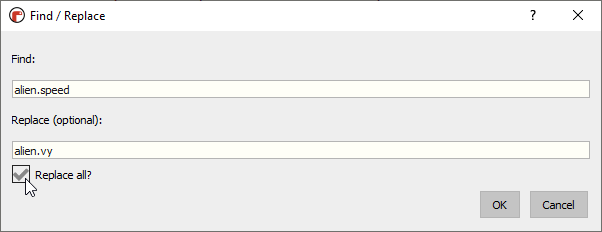
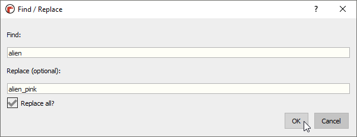
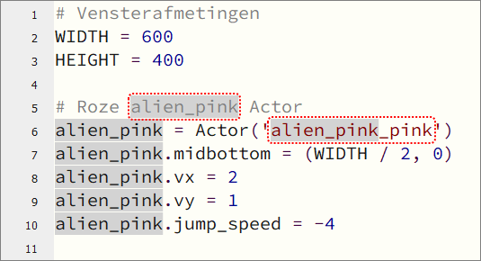

1.6. Extra uitbreidingen#
1.6.1. Zwaartekracht#
De alien beweegt nu met een constante snelheid naar beneden. In de echte wereld vallen objecten niet op die manier. Om de beweging realistischer te maken, kun je zwaartekracht aan je spel toevoegen.
Maak een variabele
GRAVITYaan. Deze variabele verandert gedurende het spel niet van waarde. Zo’n onveranderlijke variabele noemen we een constante. In Python is het de gewoonte om constanten met hoofdletters te schrijven (net zoalsWIDTHenHEIGHTvoor de vensterafmetingen).alien.py#19# Constants 20GRAVITY = 0.05
Wijzig regels 8 en 9 als volgt:
alien.py#8alien.speed = 1 9alien.jump_speed = -5
Hiermee wordt de aanvangssnelheid van de alien op 1 gezet. En in plaats van hem bij een jump 150 pixels omhoog te verplaatsen, geven we hem een negatieve snelheid (dus omhoog) van -5.
Voeg aan de
update()functie een regel toe waarmee de snelheid toeneemt met de zwaartekracht:alien.py#35# De update() functie van de game 36def update(): 37 global game_over 38 alien.y += alien.speed 39 alien.speed += GRAVITY 40 if alien.bottom > HEIGHT: 41 alien.bottom = HEIGHT 42 game_over = True 43 clock.unschedule(increment_score)
Wijzig de jump actie in
on_mouse_down():alien.py#45# Mouse down event handler 46def on_mouse_down(button, pos): 47 if game_over: 48 return 49 if alien.collidepoint(pos): 50 alien.speed = alien.jump_speed
Dat is alles. Bekijk het resultaat van deze uitbreiding. Dat ziet er al meteen een stuk realistischer uit toch?
1.6.2. Beweging in twee richtingen#
Momenteel beweegt de alien alleen verticaal. Het spel wordt interessanter als hij ook horizontaal beweegt. Om dat voor elkaar te krijgen, moeten we de snelheid opsplitsen in twee componenten: een horizontale snelheid en een verticale snelheid.
Vervang
alien.speed = 3in regel 8 door de volgende twee regels:alien.py#5# Roze alien Actor 6alien = Actor('alien_pink') 7alien.midbottom = (WIDTH / 2, 0) 8alien.vx = 2 9alien.vy = 1 10alien.jump_speed = -4
In de natuurkunde wordt voor snelheid vaak de letter v gebruikt. Daarom noemen we hier de horizontale snelheid
vx(de snelheid in x-richting) en de verticale snelheidvy(de snelheid in y-richting).Vervang overal in je code
alien.speeddooralien.vy. Je kunt dit handmatig doen, of in één keer door in Mu editor op Ctrl + F te drukken, waarmee je het Find / Replace venster opent:
Voeg de horizontale beweging toe aan de
update()functie en zorg er voor dat de alien weer verschijnt wanneer hij uit beeld is verdwenen.alien.py#36# De update() functie van de game 37def update(): 38 global game_over 39 alien.x += alien.vx 40 alien.y += alien.vy 41 alien.vy += GRAVITY 42 if alien.left > WIDTH: 43 alien.right = 0 44 if alien.bottom > HEIGHT: 45 alien.bottom = HEIGHT 46 game_over = True 47 clock.unschedule(increment_score)
Wanneer je deze code test, zul je merken dat de alien blijft bewegen na een ‘game over’. Dit is snel opgelost:
alien.py#36# De update() functie van de game 37def update(): 38 global game_over 39 if game_over: 40 return 41 alien.x += alien.vx 42 alien.y += alien.vy 43 alien.vy += GRAVITY 44 if alien.left > WIDTH: 45 alien.right = 0 46 if alien.bottom > HEIGHT: 47 alien.bottom = HEIGHT 48 game_over = True 49 clock.unschedule(increment_score)
Nu springt de alien vrolijk van links naar rechts door het venster.
1.6.3. Meerdere aliens#
Met één alien is het spel tamelijk eenvoudig. Je kunt de uitdaging vergroten door aliens toe te voegen.
Download de volgende sprites naar je
alien/imagesmap:Hernoem de variabele
alienin je gehele code naaralien_pink. Dit kan weer met Ctrl + F:
Maar pas op, met deze ‘Replace all’ actie vervang je eigenlijk teveel!

Omdat in de naam van de sprite
alien_pinkook het woord alien voorkomt, leidt onze vervangingsactie totalien_pink_pink. Gelukkig markeert Mu editor alle vervangingen grijs, zodat je eventuele foute vervangingen kunt terugdraaien. In ons geval betreft het slechts de vervangingen in regels 5 en 6. Pas deze met de hand aan.alien.py#5# Roze alien Actor 6alien_pink = Actor('alien_pink')
Nu kun je een extra
Actortoevoegen. Kies zelf de beginpositie en de snelheden.alien.py#14# Groene alien Actor 15alien_green = Actor('alien_green') 16alien_green.midbottom = (WIDTH, -50) 17alien_green.vx = -1 18alien_green.vy = 0.5 19alien_green.jump_speed = -4
Maak de nieuwe alien zichtbaar in de
draw()functie.alien.py#37# De draw() functie van de game 38def draw(): 39 screen.blit('background', (0, 0)) 40 alien_pink.draw() 41 alien_green.draw() 42 screen.draw.text(f"Score: {score}", (10, 10), color = "yellow", fontsize = 40) 43 if game_over: 44 game_over_message.draw()
Breid de
update()functie uit om de alien in beweging te krijgen.alien.py#46# De update() functie van de game 47def update(): 48 global game_over 49 if game_over: 50 return 51 alien_pink.x += alien_pink.vx 52 alien_pink.y += alien_pink.vy 53 alien_pink.vy += GRAVITY 54 alien_green.x += alien_green.vx 55 alien_green.y += alien_green.vy 56 alien_green.vy += GRAVITY 57 if alien_pink.left > WIDTH: 58 alien_pink.right = 0 59 if alien_green.right < 0: 60 alien_green.left = WIDTH 61 if alien_pink.bottom > HEIGHT or alien_green.bottom > HEIGHT: 62 alien_pink.bottom = HEIGHT 63 alien_green.bottom = HEIGHT 64 game_over = True 65 clock.unschedule(increment_score)
Voeg aan de
on_mouse_down()event handler de verwerking van een muisklik op de nieuwe alien toe.alien.py#67# Mouse down event handler 68def on_mouse_down(button, pos): 69 if game_over: 70 return 71 if alien_pink.collidepoint(pos): 72 alien_pink.vy = alien_pink.jump_speed 73 elif alien_green.collidepoint(pos): 74 alien_green.vy = alien_green.jump_speed
{kind=link}
{kind=link}
1.6.4. Tenslotte#
Het doel van deze les was je kennis te laten maken met het programmeren van een game in Pygame Zero. Je hebt ongetwijfeld gemerkt dat daar veel bij komt kijken. Toch hebben we slechts een glimp gezien van wat allemaal mogelijk is. Zo kun je bijvoorbeeld Actors animeren om ze levendiger te maken. En wat dacht je van geluidseffecten wanneer je op een alien klikt of wanneer het ‘game over’ is. De mogelijkheden zijn eindeloos.
Wil je meer weten over programmeren in Pygame Zero, kijk dan op de officiële website van Pygame Zero. Je vindt daar onze roze alien ook (waarvan je trouwens nog meer versies kunt downloaden op Kenney), alsmede verschillende tutorials voor het maken van games.